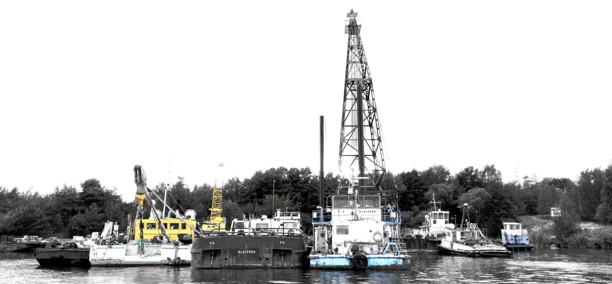
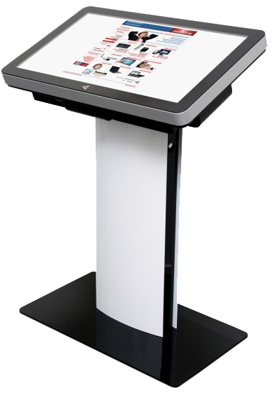

Mažmeninė techninė įranga
2020.10.29 07:52

bs2 logo
Naujienos Naujienos apie kompaniją Naujienos apie produktus „Penki kontinentai“ naujienosNaujienos apie kompaniją
Naujienos apie produktus
„Penki kontinentai“ naujienos
Bendrovė Apie BS/2 Istorija Partneriai Karjera Kontaktai Įmonių grupė „Penki kontinentai“ Privatumo politika Tvari veikla
Apie BS/2
Istorija
Partneriai
Karjera
Kontaktai
Įmonių grupė „Penki kontinentai“
Privatumo politika
Tvari veikla
Pramonės šakos Finansinės institucijos Mažmeninė prekyba Degalinės Paštai Loterijų bendrovės
Finansinės institucijos
Mažmeninė prekyba
Degalinės
Paštai
Loterijų bendrovės
Programinė įranga Finansinės institucijos Mažmeninė prekyba Degalinės Paštai Produktų šeima „.iQ“ Apsauga Kontrolė ir analizė Automatizavimas ir optimizavimas Turinio valdymas Mokėjimo sprendimai, sąskaitos „Mobile.iQ“ platforma
Finansinės institucijos
Mažmeninė prekyba
Degalinės
Paštai
Produktų šeima „.iQ“
Apsauga
Kontrolė ir analizė
Automatizavimas ir optimizavimas
Turinio valdymas
Mokėjimo sprendimai, sąskaitos
„Mobile.iQ“ platforma
Techninė įranga Finansinės institucijos Mažmeninė prekyba Degalinės Paštai Loterijų bendrovės Bankomatai Seifai Mažmeninė techninė įranga Grynųjų pinigų apdorojimo technika Mokėjimo sprendimai Atsarginės dalys Nebegaminami produktai Saugumas
Finansinės institucijos
Mažmeninė prekyba
Degalinės
Paštai
Loterijų bendrovės
Bankomatai
Seifai
Mažmeninė techninė įranga
Grynųjų pinigų apdorojimo technika
Mokėjimo sprendimai
Atsarginės dalys
Nebegaminami produktai
Saugumas
Paslaugos Finansinės institucijos Mažmeninė prekyba Priežiūra Programinės įrangos palaikymas IT infrastruktūros monitoringas Užsakomosios paslaugos Techninė įranga kaip paslauga Programinė įranga kaip paslauga Programinės įrangos kūrimas Konsultavimas Mokymai
Finansinės institucijos
Mažmeninė prekyba
Priežiūra
Programinės įrangos palaikymas
IT infrastruktūros monitoringas
Užsakomosios paslaugos
Techninė įranga kaip paslauga
Programinė įranga kaip paslauga
Programinės įrangos kūrimas
Konsultavimas
Mokymai
Kompleksiniai sprendimai Techninės ir programinės įrangos kompleksas „VTM.iQ“ Savitarnos įranga akliesiems ir silpnaregiams FRN.iQ A-Series - bankinės įrangos prieigos kontrolės sistema Cash-In Box.iQ Termovizoriai
Techninės ir programinės įrangos kompleksas „VTM.iQ“
Savitarnos įranga akliesiems ir silpnaregiams
FRN.iQ
A-Series - bankinės įrangos prieigos kontrolės sistema
Cash-In Box.iQ
Termovizoriai
Karjera
Techninė įranga
Finansinės institucijos Mažmeninė prekyba Degalinės Paštai Loterijų bendrovės Bankomatai Vienafunkciai „CS 2020“ (CINEO C2020) „CS 2040“ (CINEO C2040) „CS 2060“ (CINEO 2060) „CS 2550“ (CINEO C2550) „CS 280“ (ProCash 280) „DN Series 100D“ Daugiafunkciai „CS 2070“ (CINEO C2070) „CS 2080“ (CINEO C2080) „CS 2560“ (CINEO C2560) „CINEO C2560 Drive-up“ „CINEO C2590 Island Drive-Up“ „ProCash 281“ DN Series 490C DN Series 470C Recirkuliacijos sistemos „CS 4040“ (CINEO C4040) „CS 4060“ (CINEO C4060) „CS 4080“ (CINEO C4080) „CS 4560“ (CINEO C4560) „CS 4580“ (CINEO C4580) DN Series 450H DN Series 400H DN Series 250H DN Series 200H Nauja! „CS 4090“ („CINEO C4090“) Seifai „CS 6040“ („CINEO C6040“) „CS 6060“ („CINEO C6060“) Mažmeninė techninė įranga POS sistemos „BEETLE/Express“ (EN) „BEETLE/Fusion“ „BEETLE/S-II plus“ „BEETLE/M-II plus“ „Xion/Mtop“ BEETLE /M-III (EN) BEETLE /iPOS plus (EN) BEETLE /moPOS (EN) BEETLE /iPOS plus Advanced (EN) Išoriniai įrenginiai Spausdintuvai Wincor Nixdorf TH180 (EN) Wincor Nixdorf ND77 (EN) Wincor Nixdorf TH230 (EN) Wincor Nixdorf TH320 (EN) Wincor Nixdorf TH250 (EN) Wincor Nixdorf TH210-VI (EN) Grynųjų pinigų stalčiai KA12-1 (EN) KA17 (EN) KA21 (EN) Klaviatūros TA 58P (EN) TA 61 (EN) TA 85/TA 85P (EN) LCD plokštieji ekranai BA71 (EN) BA80 (EN) BA82 (EN) BA83 (EN) BA91W (EN) POS touchscreen BA9x family (EN) Klientų / operatorių ekranai BA63 (EN) BA66 (EN) BA64-G (EN) BA64-2 (EN) Rankiniai skeneriai Symbol Technologies - LS2208 (EN) Honeywell Voyager 9520/VoyagerCG 9540 (EN) Datalogic Quickscan™ I QD2100 (EN) Datalogic QuickScan™ QM2100 (EN) Motorola DS4208 (EN) Stacionarūs skaitytuvai Motorola DS9208 (EN) Datalogic Magellan™ 1100i (EN) Honeywell QuantumT 3580 (EN) Pristatymo skaitytuvas Datalogic Magellan™ 2200VS (EN) Datalogic Magellan™ 2300HS (EN) Datalogic Magellan™ 8400 (EN) Datalogic Magellan™ 3200VSi (EN) Datalogic Magellan™ 3300HSi (EN) 2D Multi-Plane Image Bioptic Scanner EL70 (EN) 2D Multi-Plane Image Bioptic Scanner EL 69 (EN) 2D Full-Image Bioptic Scanner EL68 (EN) Kainų tikrintuvai Loterijų sistemų išoriniai įrenginiai Xiprint+ (EN) Xiscan3 (EN) Grynųjų pinigų / lėšų valdymas CINEO C1010 (EN) CINEO C1020 (EN) CINEO C1030 (EN) „CINEO C6010“ „CINEO C6020“ „iCASH 10“ „iCASH 15“ „iCASH 15e“ „iCASH 50“ „iCASH 100“ Savitarnos sprendimai „Attendant Station“ „POS Tower 150“ „POS Tower 150 R“ „POS Tower 150 CINEO“ BEETLE /iSCAN EASY SCO (EN) BEETLE /iSCAN EASY Hybrid (EN) Mokėjimo savitarnos sprendimai Pay Tower 150 and 150 XS (EN) „Pay Tower 150 R (EN)“ „Pay Tower 150 CINEO (EN)“ Informaciniai terminalai Polytouch (EN) W1000 (EN) CINEO T1000 (EN) Taros surinkimo sistemos Backroom components „Revendo 7000“ Revendo 7300 „Revendo 8000“ „Revendo 9000“ „Revendo 9020“ Revendo 9010 (EN) Backroom components (EN) Elektroninės lentynų etiketės Grynųjų pinigų apdorojimo technika Valiutų skaičiuokliai DoCash 903 (EN) DoCash 923 (EN) DoCash 3000 SD (EN) DoCash 3040/3040 UV (EN) DoCash 3050 SD/UV (EN) DoCash 3100 SD/UV (EN) Banknotų rūšiuoklė Julong JL-303 (EN) Monetų rūšiuokliai SCAN COIN 303/313 Coin Counters (EN) Valiutos detektoriai DoCash 025 (EN) DoCash DVM BIG (EN) DoCash 400 series (EN) DoCash 500 series (EN) DoCash 4Scan (EN) Banknotų pakavimo mašinos „DoCash 2035“ (EN) „DoCash 2045“ (EN) „DoCash 2240“ (EN) „DoCash 2241“ (EN) DoCash 2240 mini (EN) Detektorių priedai „DoCash L“ (EN) „DoCash M“ (EN) „DoCash VL“ (EN) Mokėjimo sprendimai VIVOpay Kiosk II (EN) Atsarginės dalys Nebegaminami produktai Bankomatai „ProCash 3100xe“ „ProCash 4000“ „ProCash 4100“ „ProCash 1500xe“ „ProCash 2000xe“ „ProCash 8050“ „ProCash 2050xe“ „ProCash 2054xe“ „ProCash 2100xe“ „ProCash 2150xe“ „SlimCash 200“ „ProCash 2250xe“ „ProCash 285“ Seifai „ProCash 5000“ „CINEO C6010“ „CINEO C6020“ „ProCash 5000 mini“ ProCash 5100 (EN) „CINEO C6030“ „CINEO C6050“ Daugiafunkciai seifai Informaciniai terminalai „ProConsult 2000 seated“ „ProPrint 1000“ „ProPrint 2000“ ProPrint 2000LS (EN) „ProInfo 1000“ Spausdintuvai „HighPrint 4915xe“ Išoriniai įrenginiai BA69 (EN) Beetle /iCHECK (EN) EL49 (EN) TH420 (EN) Grynųjų pinigų priėmimo sistemos „ProCash 3000“ Saugumas Apsauga nuo duomenų nuskaitymo Apsauga nuo duomenų nuskaitymo ir „ATMeye.iQ“ Pradinis puslapis Techninė įrangaMažmeninė techninė įranga
Tai „Diebold Nixdorf“ atsiskaitymo kasos ir POS sistemos „Beetle“, periferiniai įrenginiai (spausdintuvai, skeneriai, elektroniniai kainynai, grynųjų pinigų saugyklos), banknotų priėmimo automatai, savitarnos kasos ir mokėjimo sistemos („PayTower“), taros priėmimo automatai („Revendo“) ir kt.
POS sistemos
BEETLE – tai patikimumo, perspektyvumo ir „Diebold Nixdorf“ sukurtų pažangių mokėjimo technologijų sinonimas. Turėdami 40 metų darbo patirtį, esame vieni iš rinkos lyderių, tiekiantys geriausius mokėjimo sprendimus viso pasaulio mažmeninės prekybos įmonėms. Šie sprendimai tinka naudoti ilgą laiką, o tai leidžia mūsų klientams optimizuoti atsiskaitymo punktų darbą ir mažinti turto savitarną.
Išoriniai įrenginiai
Įvairūs prekybos vietoms skirti periferiniai įrenginiai. Ekranai, spausdintuvai, skaitytuvai, klaviatūros, kasos stalčiai ir kiti įvesties bei išvesties įrenginiai užtikrina efektyvų atsiskaitymo procesą ir padeda sumažinti bendrąsias išlaidas.
Grynųjų pinigų / lėšų valdymas
Monetų ir banknotų recirkuliacijos sistemos, skirtos automatizuotiems mokėjimams atsiskaitymo zonoje ir kasoje. Paprasta integruoti įėjimuose, kasose ir IT aplinkoje.
Savitarnos sprendimai
Siūlome įvairių pritaikomų savitarnos automatizuoto atsiskaitymo sistemų. Galima atsiskaityti grynaisiais pinigais ir (arba) kortelėmis.
Mokėjimo savitarnos sprendimai
Visapusiškas, išplečiamas klientams pritaikytų automatizuoto mokėjimo procesų realizavimo, pvz., derinant su mobiliojo apsipirkimo sprendimu, „Tower“ sistemų rinkinys. Pasirinktiniai sprendimai gali būti atsiskaitymas grynaisiais pinigais ir (arba) kortelėmis.
Informaciniai terminalai
Innovative and flexible portfolio of kiosk systems for the customer-specific realization of interactive kiosk solutions – suitable for all industry market sectors.
Taros surinkimo sistemos
Pristačiusi naujausios kartos taros surinkimo automatų modulinės platformos koncepciją, „Diebold Nixdorf“ siūlo naujausią klientams pritaikytų sprendimų technologiją.
Elektroninės lentynų etiketės
Elektroninės etiketės – tai modernūs įrenginiai, kurie pakeičia įprastai pažymėtas kainas lentynose ir padeda spręsti nuolat kintančių kainų žymėjimo problemą.
šeimos Produktai:
ATMeye Service Desk Cash Management Payments Bill Manager Brancheye SmartSafe Mobile
Bendrovė
Apie BS/2 Istorija Partneriai Kontaktai Įmonių grupė „Penki kontinentai“ Privatumo politika Tvari veiklaPrograminė įranga
Produktų šeima „.IQ“ Saugumas Kontrolė ir analizė Automatizavimas ir optimizavimas Turinio valdymas Lojalumas Mokėjimo sprendimai, sąskaitos „Mobile.iQ“ platforma Sprendimai mažmeniniam versluiKontaktai
UAB „Penkių kontinentų bankinės technologijos” Kareivių g. 2, LT-08248, Vilnius, Lietuva Tel. +370 5 266 4595 Faks. +370 5 266 4550 El.paštas: info@bs2.ltTechninė įranga
Bankomatai Automatiniai seifai Spausdintuvai Prekybos įranga Įranga lėšoms tvarkyti Mokėjimo sprendimai Atsarginės dalys Nebegaminami produktai SaugumasPaslaugos
Paslaugos Palaikymas ir priežiūra IT infrastruktūros palaikymas Užsakomosios paslaugos Techninė įranga kaip paslauga Programinė įranga kaip paslauga Programinės įrangos kūrimas Konsultavimas MokymaiTaip pat aplankykite:
www.5ci.lt www.atmeye.com www.smartsafe.lt www.cashmanagementiq.com www.payments-iq.com rss facebook youtube twitter linkedin© 2020 UAB "Penki Kontinentai" Visos teisės saugomos.
Siekiant, kad ši svetainė veiktų sklandžiai, o jūs gautumėte aktualią informaciją, naudojami slapukai. Daugiau informacijos. SUTINKU ✕Norite sekti mūsų naujienas?
Kviečiame prenumeruoti mūsų naujienlaiškį, kad nuolat gautumėte aktualias naujienas ir informaciją apie išskirtinius BS/2 pasiūlymus.
* BS/2 naudos Jūsų kontaktus tik kompanijos naujenlaiškių siuntimo tikslais. Trečiosioms šalims Jūsų kontaktai neplatinami.
- Techninė įranga | UCS
- Techninė įranga „Porsche Tequipment Genuine Access ...
- Techninė įranga - BTT Cloud
- KĄ DARYTI, KAI ESATE APGAUTI INTERNETE - TECHNINĖ ĮRANGA ...
- Techninė įranga – ELIP (Enciklopedija Lietuvai ir pasauliui)
- Techninė įranga - Wikiwand
- KĄ REIŠKIA „SAAS“? - TECHNINĖ ĮRANGA - 2020
- Mažmeninė techninė įranga - BS/2
- Techninė įranga | Egledagyte's Blog
- Techninė Įranga | September 2020
- Techninė įranga | UCS
Mažmeninė techninė įranga Tai „Diebold Nixdorf“ atsiskaitymo kasos ir POS sistemos „Beetle“, periferiniai įrenginiai (spausdintuvai, skeneriai, elektroniniai kainynai, grynųjų pinigų saugyklos), banknotų priėmimo automatai, savitarnos kasos ir mokėjimo sistemos („PayTower“), taros priėmimo automatai („Revendo“) ir kt.
- Techninė įranga „Porsche Tequipment Genuine Access ...
Techninė įranga „Porsche Tequipment“ kuriama pasitelkus per 20 metų sukauptą patirtį ir žinias, todėl jai būdinga viena – „Porsche“ įprasta kokybė. Ji kuriama įsivaizduojant visą automobilį, tačiau idealiai pritaikant jūsų „Porsche“. Šiuos aukštos kokybės produktus lengvai pritaikysite savo „Porsche ...
- Techninė įranga - BTT Cloud
Techninė įranga- tai kompiuterių aparatinė įranga, kurios pagalba mes gebame "bendrauti" su progr. įranga. Paprastai techninę įrangą sudaro tokie komponentai: monitorius, centrinis korpusas, klaviatūra, pelė, spausdintuvas ir t.t. Monitorius- tai įrenginys, kurio pagalba mes "matome" tai, ką mums atvaizduoja programinė įranga.
- KĄ DARYTI, KAI ESATE APGAUTI INTERNETE - TECHNINĖ ĮRANGA ...
Techninė Įranga. Kas yra DCIM failas? 2020; Jei fotografavote tik kino kameromi, labai tikėtina, kad niekada nepamatyite DCIM failo. Telefonų u fotoaparatai populiarėjant, labiau tikėtina, kad šių failų neraite. Kadangi gamintojai gamina tiek d...
- Techninė įranga – ELIP (Enciklopedija Lietuvai ir pasauliui)
Techninė įranga (aparatinė įranga, angl. hardware, pranc. matériel) informacinėse technologijose – informacijos apdorojimo sistemos fizinių komponentų visuma arba tos visumos dalis. Kompiuterių techninė įranga apima ir visas fizines kompiuterio dalis, bet ne programinę įrangą, valdančią šias dalis.
- Techninė įranga - Wikiwand
techninė įranga (Informatika) - informacijos apdorojimo sistemos fizinių komponentų visuma arba tos visumos dalis. Pvz. kompiuteriai, išoriniai įrenginiai. Žodžių junginį sudaro žodžiai: techninė; įranga; Vertimai
- KĄ REIŠKIA „SAAS“? - TECHNINĖ ĮRANGA - 2020
Techninė įranga informacinėse technologijose – informacijos apdorojimo sistemos fizinių komponentų visuma arba tos visumos dalis.[1] Kompiuterių techninė įranga apima ir visas fizines kompiuterio dalis, bet ne programinę įrangą, valdančią šias dalis.
- Mažmeninė techninė įranga - BS/2
Verslo procesų automatizavimo techninė įranga: POS terminalai, spausdintuvai, kasos aparatai ir kita techninė įranga individualiems verslo poreikiams.
- Techninė įranga | Egledagyte's Blog
Techninė įranga. Skaitmeniniai nivelyrai; Trimble TDC100; Trimble X7; Trimble X7; Trimble X7; Trimble SiteVision; DJI Phantom 4 RTK; DJI Phantom 4 RTK; Bepiločiai orlaiviai. DJI Matrice 300 RTK; DJI Phantom 4 RTK; DJI Mavic 2 Enterprise; DJI Phantom 4 Multispektrinis; DJI Matrice 200/210 serija;
- Techninė Įranga | September 2020
„Software as a Service“ (SaaS) yra procesas, kurio metu programinė įranga teikiama iš anksto nustatytu prenumeratos pagrindu; paprastai kas mėnesį ar kasmet. Štai ką reikia žinoti apie „SaaS“ platformą.
Mažmeninė techninė įranga Tai „Diebold Nixdorf“ atsiskaitymo kasos ir POS sistemos „Beetle“, periferiniai įrenginiai (spausdintuvai, skeneriai, elektroniniai kainynai, grynųjų pinigų saugyklos), banknotų priėmimo automatai, savitarnos kasos ir mokėjimo sistemos („PayTower“), taros priėmimo automatai („Revendo“) ir kt.
Techninė įranga „Porsche Tequipment“ kuriama pasitelkus per 20 metų sukauptą patirtį ir žinias, todėl jai būdinga viena – „Porsche“ įprasta kokybė. Ji kuriama įsivaizduojant visą automobilį, tačiau idealiai pritaikant jūsų „Porsche“. Šiuos aukštos kokybės produktus lengvai pritaikysite savo „Porsche ...
Techninė įranga- tai kompiuterių aparatinė įranga, kurios pagalba mes gebame "bendrauti" su progr. įranga. Paprastai techninę įrangą sudaro tokie komponentai: monitorius, centrinis korpusas, klaviatūra, pelė, spausdintuvas ir t.t. Monitorius- tai įrenginys, kurio pagalba mes "matome" tai, ką mums atvaizduoja programinė įranga.
Techninė Įranga. Kas yra DCIM failas? 2020; Jei fotografavote tik kino kameromi, labai tikėtina, kad niekada nepamatyite DCIM failo. Telefonų u fotoaparatai populiarėjant, labiau tikėtina, kad šių failų neraite. Kadangi gamintojai gamina tiek d...
Techninė įranga (aparatinė įranga, angl. hardware, pranc. matériel) informacinėse technologijose – informacijos apdorojimo sistemos fizinių komponentų visuma arba tos visumos dalis. Kompiuterių techninė įranga apima ir visas fizines kompiuterio dalis, bet ne programinę įrangą, valdančią šias dalis.
techninė įranga (Informatika) - informacijos apdorojimo sistemos fizinių komponentų visuma arba tos visumos dalis. Pvz. kompiuteriai, išoriniai įrenginiai. Žodžių junginį sudaro žodžiai: techninė; įranga; Vertimai
Techninė įranga informacinėse technologijose – informacijos apdorojimo sistemos fizinių komponentų visuma arba tos visumos dalis.[1] Kompiuterių techninė įranga apima ir visas fizines kompiuterio dalis, bet ne programinę įrangą, valdančią šias dalis.
Verslo procesų automatizavimo techninė įranga: POS terminalai, spausdintuvai, kasos aparatai ir kita techninė įranga individualiems verslo poreikiams.
Techninė įranga. Skaitmeniniai nivelyrai; Trimble TDC100; Trimble X7; Trimble X7; Trimble X7; Trimble SiteVision; DJI Phantom 4 RTK; DJI Phantom 4 RTK; Bepiločiai orlaiviai. DJI Matrice 300 RTK; DJI Phantom 4 RTK; DJI Mavic 2 Enterprise; DJI Phantom 4 Multispektrinis; DJI Matrice 200/210 serija;
„Software as a Service“ (SaaS) yra procesas, kurio metu programinė įranga teikiama iš anksto nustatytu prenumeratos pagrindu; paprastai kas mėnesį ar kasmet. Štai ką reikia žinoti apie „SaaS“ platformą.
 